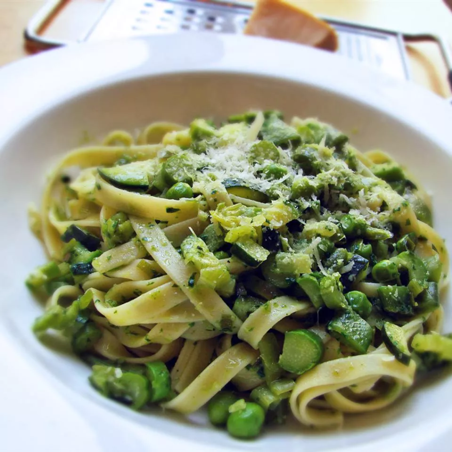

Pasta Primavera

Description
Pasta Primavera, a type of spaghetti which is combined with fresh spring vegetables. It creates a new way to
enjoy pasta differently than the original red sauce.
Ingredients
- Fresh Basil
- 3 cups chicken broth
- olive oil
- 2 cloves garlic
- pound of pasta
- large leek
- 2 Jalapeno peppers
- salt
- 2 zucchinis
- cup of sugar snap peas
- 1/2 cup of english peas
- Asparagus
- 1/2 cup of grated paresan cheese
Steps
- Fill a large pot with water and salt generously. Bring it to a rolling boil.
- Dip the basil leaves until they're bright green (around 2 seconds) then immediatly immerse the basil in ice
water to stop the cooking. Removes the leaves from the stem afterwards.
- Blend basil leaves with 1 cup of chicken broth, 1/2 cup of olive oil, and garlic until smooth
- Add the pasta into the pot of boil water. Cook over medium heat for about 8 mintues, then drain the water.
- Heat 2 tablespoons of olive oil in a large saucepan over medium heat. Cook the green onion (until soft)
- Add the Jalapeno and salt to taste. Cook and stir until Jalapenos are soft
- Incraesae heat to med-high, stir in 2 cups of chicken broth, zucchini, sugar snap peas, and english peas.
- Add 1/4 cup of the basil blend into the saucepan, let it cook for a minute. Remove from the heat
- Place pasta in a laarge bowl then pour the mixture over the pasta and pour in the rest of the basil mixture.
Top with Parmesan cheese, then mix it to combine.